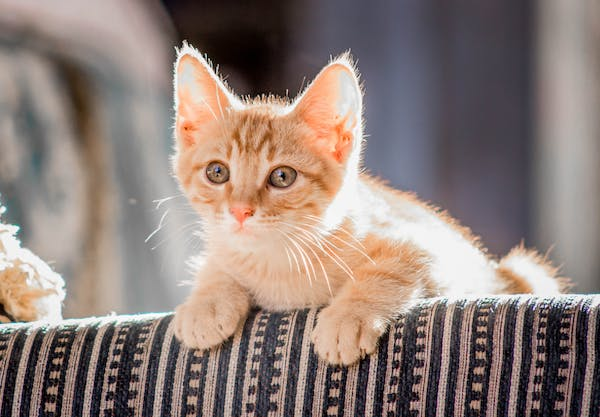

Sign Up Now
Purpose and Audience
Purpose Nowadays, most of the people have a pet that take care of its healthiness and all the needed cares to see our pets grow. One of the main pets we can find in our homes are cats, at this site you will figure out about the cares of their breedings, When our favorite cat, if it is a female, gives birth to her breedings, we ask ourselves, what should we do? This site is free to help you what to do in those cases, it's very cute to raise this little kittens but we have to be aware on their cares, dos and don'ts. Finally, enjoy our pets bieng responsible of them. I hope you can familiarize yourself with this site and solve your doubts about the care of your kittens following through our steps so you can succeed Audience The site is directed to anyone with a pregnant cat or with kittens, or it is for people wants to have cats or is thinking if to have a cat is a good option. It will allow you to get further knowladge about the cats growing and maby take a desicion if it is the pet you desire to have
Question
¿When can kittens be seperated from their mother?
Answer
When the have two months you can get seperated from their mother or give them in adoption
Question
¿When can they start eating solid food?
Answer
For the first two months they should just drink maternal milk, for third month they can start eating chiken in small portion
Question
¿What to do if their mother doesn't feed them?
Answer
Try to feed them with a little bottle of milk, you have to do it everytime so they can feed correctly